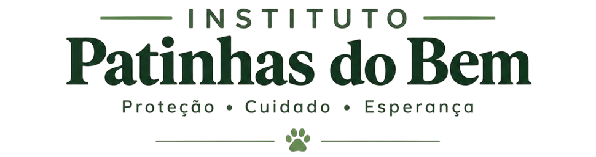
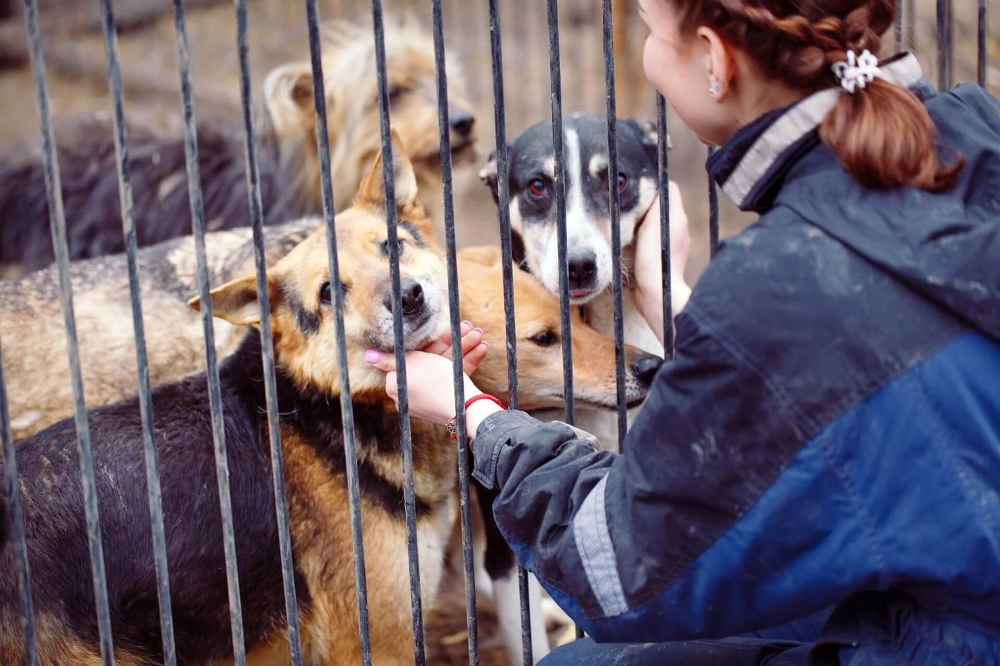
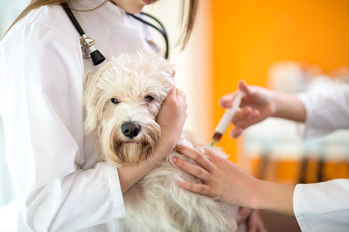
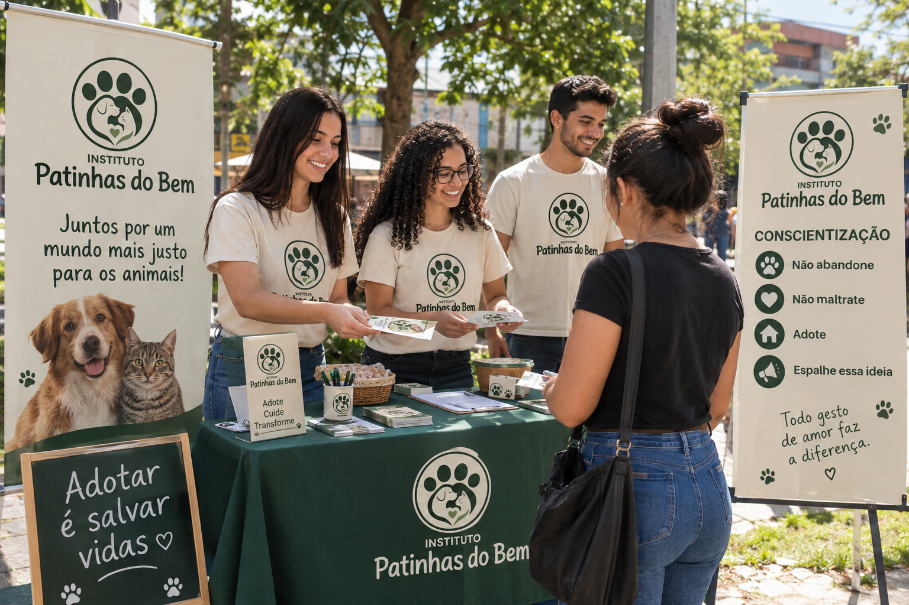
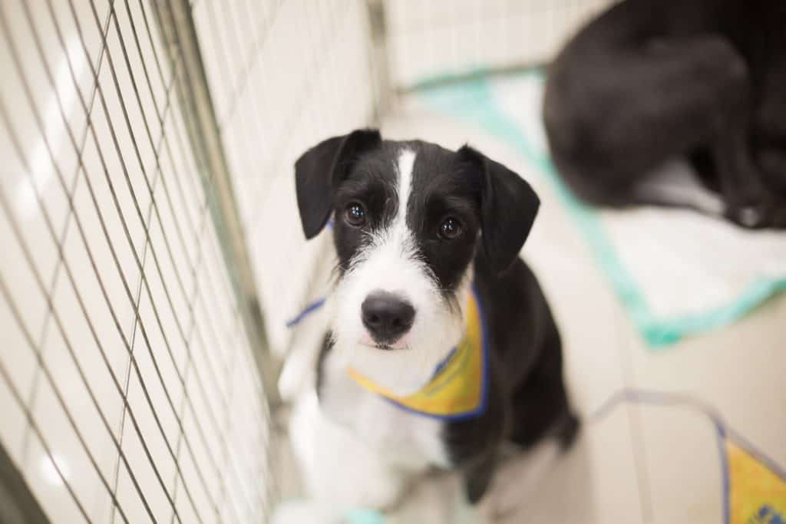
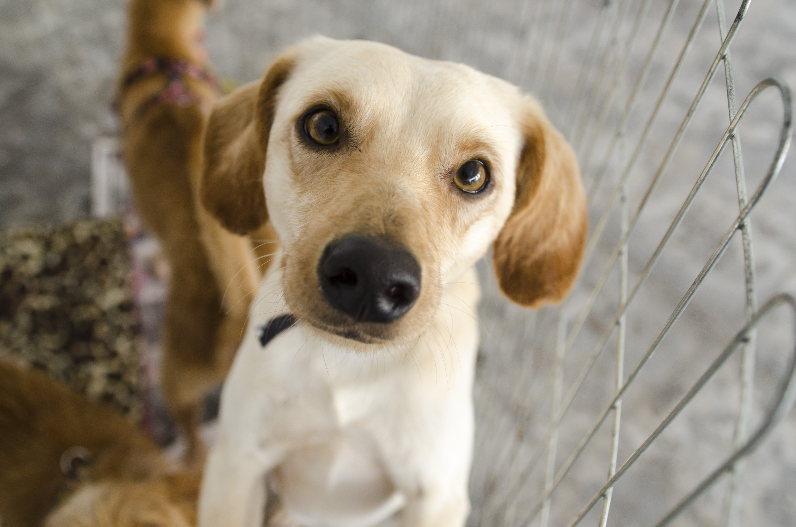
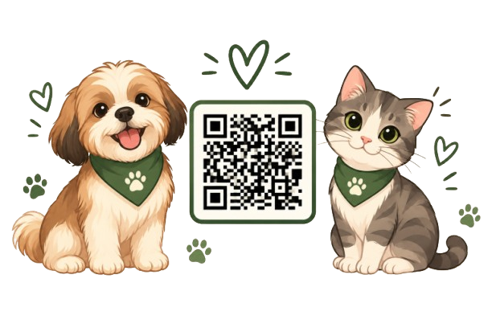

Coordenação
Organiza as atividades do instituto e planeja ações voltadas à proteção e ao bem-estar dos animais.


POR UMA VIDA COM MAIS CUIDADO
Trabalhamos para que cães e gatos recebam proteção, cuidado e a oportunidade de encontrar um lar cheio de amor
.jpg)
QUEM SOMOS
O Instituto Patinhas do Bem é uma organização dedicada à proteção e ao bem-estar de cães e gatos. Nosso trabalho é inspirado no respeito à vida e na ideia de que todo animal merece ser tratado com dignidade.
Por meio de ações de conscientização, acolhimento e incentivo à adoção responsável, buscamos aproximar a comunidade da causa animal.

QUEM FAZ A DIFERENÇA
Pessoas unidas pelo amor aos animais e pelo compromisso de construir um futuro melhor para eles
Organiza as atividades do instituto e planeja ações voltadas à proteção e ao bem-estar dos animais.
Dedica atenção aos animais acolhidos, ajudando a garantir carinho, segurança e cuidados diários.
Organiza o recebimento de doações, acompanha os materiais arrecadados e ajuda a garantir que os recursos cheguem aos animais que precisam.
NOSSAS INICIATIVAS
Conheça algumas iniciativas do instituto

Ações de acolhimento e atenção às necessidades dos animais resgatados.

Informação sobre guarda responsável, prevenção do abandono e respeito aos animais.
Incentivo à adoção responsável e à construção de vínculos duradouros.
ADOÇÃO RESPONSÁVEL
Nossos perfis disponíveis


FAÇA PARTE DESSA CAUSA
Uma atitude solidária pode fazer diferença.
Contribua com ração, mantas, produtos de higiene e outros materiais necessários.
Dedique tempo e habilidades para apoiar campanhas educativas e ações de cuidado animal.
Divulgue a adoção responsável e informações que ajudem a prevenir o abandono e os maus-tratos.
FALE CONOSCO
Envie sua mensagem para demonstrar interesse em adoção, voluntariado ou em saber mais sobre a causa animal.
E-mail: contato@patinhasdobem.com.br
Localização: Cajazeiras – PB
 (83) 99101-0101
(83) 99101-0101
Sua contribuição ajuda a promover o cuidado, a proteção e o bem-estar dos animais.

Nossa chave Pix
00000000-0000-4000-8000-000000000000